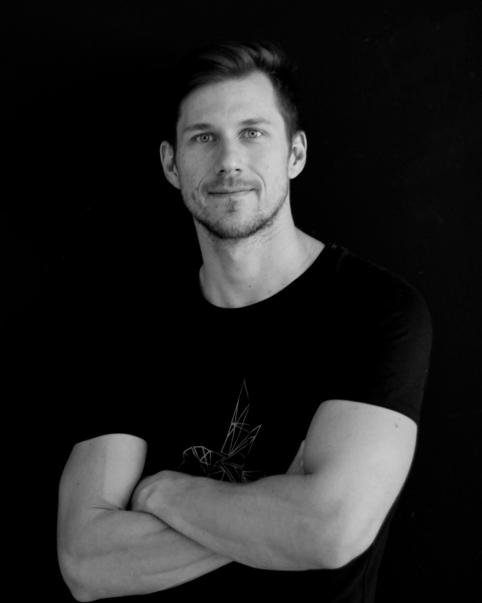

Funders and foundations
Fund a cohort, a new program, or the research and development behind one.
- A program shaped around your priorities and geography
- Clear outcome targets agreed up front
- Regular reporting, and stories you can share

Partner with us
We design and run programs with funders, employers and governments, so underserved young people gain the AI fluency, judgement and connections to do work that lasts.

Who we work with
Fund a cohort, a new program, or the research and development behind one.
Shape what learners practise around the roles you actually hire for.
Deliver national digital-skills and employment goals with a partner who knows the context.
How we design programs
Every program is co-designed. We bring ten years of delivery; you bring the problem you want solved.
We look at which roles are changing, who is locked out of them, and why.
Curriculum, selection criteria and success measures, agreed together before launch.
Online cohorts with live sessions, mentors, real projects and career support.
We track outcomes after graduation and share what worked and what didn’t.
Partnerships in practice

AI is reshaping the entry-level developer roles that young people in Iraq rely on. Together with GIZ ProDIGI we designed a program that teaches how AI tools work, how they fail, and the judgement and human skills that make developers indispensable.
A four-month leadership program for emerging female technologists and entrepreneurs in conflict-affected contexts, combining AI ethics, digital entrepreneurship and systems thinking with mentorship and real-world project development.
“As a woman, I now see my own power and ability.” Shahima, fellowship alum

Our partners
Governments, companies and foundations that have backed our work since 2016.
Every partnership starts with Alexandra and Marcello. Tell us what you want to change and where, and we’ll come back within a week with ideas.

